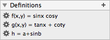

| pi, π | Smallest positive zero of sin(x). | ||||||||||||||||||||||||||||||||||||||||||||||||||||||||||||
| e | Euler's number | ||||||||||||||||||||||||||||||||||||||||||||||||||||||||||||
| eulergamma | Euler-Mascheroni constant | ||||||||||||||||||||||||||||||||||||||||||||||||||||||||||||
| i | Imaginary unit: i² = -1, i = (0,1) in the canonical ℂ ≅ ℝ² identification | ||||||||||||||||||||||||||||||||||||||||||||||||||||||||||||
| ° | π/180, so 360° = 360∙° = 2π | ||||||||||||||||||||||||||||||||||||||||||||||||||||||||||||
| NAN | Undefined value. f(NAN) = NAN. | ||||||||||||||||||||||||||||||||||||||||||||||||||||||||||||
| const |
Physical constants. Use either const(name) or const_name with any of these:
|
| + | Addition |
| - | Negation/Subtraction |
| * | Multiplication |
| / | Division |
| % | Modulus. Only defined for real numbers: a % b = a - b*floor(a/b). The result is always between 0 and b. |
| ^, ** | Exponentiation, see also spow |
| ~ | Complex conjugation: ~(a+ib) = a-ib, no effect on real numbers. |
| ! | Factorial (postfix), see also gamma |
| ¹ .. ⁹ | Powers (postfix) |
| <, > | Comparison. Only defined for real numbers: a > b := 1 if a > b, else 0 |
| |•| | Absolute value. |
| Simple & Polynomials | |
|---|---|
| re | Real part: re(a+ib) = a |
| im | Imaginary part: im(a+ib) = b |
| abs | Magnitude/absolute value. Can also be written as |z|. |
| absq | Squared magnitude: absq(z) := abs(z)^2 (but faster). |
| arg | Argument function, arg(z) is the angle between the positive real axis and the connection line from 0 to z. In the range [-π,π). arg(x, y) := arg(x+iy). |
| sgn | Sign function: sgn(z) = z / |z| or 0 if z = 0 |
| conj | Complex conjugation, same as ~z. |
| complex | complex(x,y) = x+iy. |
| hypot | hypot(z,w) = sqrt(z²+w²) |
| sqr | sqr(z) = z² |
| √, sqrt | Square root, branch cut along the negative real axis. |
| clamp | clamp(x) restricts the argument to [0,1], meaning clamp(x) = max(0, min(1, x)). clamp(x, a, b) restricts x to [min(a,b), max(a,b)]. clamp(z, a, b) = clamp(re z, re a, re b) + i clamp(im z, im a, im b) for complex z, a, b. clamp(z) = clamp(z, 0, 1+i) = clamp(re z) + i clamp(im z). Invariant under permutation: clamp(a,b,c) = clamp(b,c,a) = clamp(c,b,a) = ... clamp(∞,x,y) = max(x,y), clamp(-∞,x,y) = min(x,y) clamp(x,x,y) = x, a ≤ b ≤ c ⇒ clamp(a,b,c) = b |
| det | det(a+ib, c+id) = ad-bc |
| sp | sp(a+ib, c+id) = ac+bd |
| swap | swap(a+ib) = b+ia |
| mida | Arithmetic mean: mida(z,w) = (z+w)/2 |
| midg | Geometric mean: midg(z,w) = √(z*w) |
| midh | Harmonic mean: midh(z,w) = 2zw / (z+w) |
| Min/Max Variations | |
| min, max | Minimum/Maximum. Only defined for real numbers: min(a,b) := a if a < b, else b |
| absmin, absmax | Returns the number with the smaller/larger absolute value: absmin(z, w) := z if |z| < |w|, else w |
| realmin, realmax | Returns the number with the smaller/larger real part |
| imagmin, imagmax | Returns the number with the smaller/larger imaginary part |
| Exponential | |
| exp | e^z (but exp(z) is a little faster and slightly more precise) |
| ln, log | Natural logarithm. Inverse of exp with branch cut along the negative real axis. |
| log2 | Binary logarithm: log2(z) = log(z) / log(2) |
| log10 | Decadic logarithm: log10(z) = log(z) / log(10) |
| spow | spow(x,y) = |x|^y * sgn(x) |
| Trigonometric | |
| sin, cos | Sine and Cosine |
| tan | Tangent function: tan(z) = sin(z) / cos(z) |
| sec | Secant: sec(z) = 1 / cos(z) |
| csc | Cosecant: csc(z) = 1 / sin(z) |
| cot | Cotangent: cot(z) = 1 / tan(z) = cos(z) / sin(z) |
| sinh | Hyperbolic sine |
| cosh | Hyperbolic cosine |
| tanh | Hyperbolic tangent: tanh(z) = sinh(z) / cosh(z) |
| sech | Hyperbolic secant: sech(z) = 1 / cosh(z) |
| csch | Hyperbolic cosecant: csch(z) = 1 / sinh(z) |
| coth | Hyperbolic cotangent: coth(z) = 1 / tanh(z) = cosh(z) / sinh(z) |
| arcsin, arccos | Inverse of sin and cos. |
| arctan | Inverse of tan(z) |
| arcsec | Inverse of sec(z), arcsec(z) = arccos(1/z) |
| arccsc | Inverse of csc(z), arccsc(z) = arcsin(1/z) |
| arccot | Inverse of cot(z), arccot(z) = arctan(1/z) |
| arsinh, arcosh, artanh, arsech, arcsch, arcoth | Inverse hyperbolic functions |
| Gamma | |
| gamma, Γ | Gamma function |
| factorial | factorial(z) = z! = gamma(z+1) |
| beta | Beta function: beta(a,b) = Γ(a)Γ(b) / Γ(a+b) |
| bico | Binomial coefficient: bico(n,k) = n! / k!(n-k)! = 1 / (n+1)beta(n-k+1,k+1) |
| digamma | Logarithmic derivative of the Gamma function: digamma(z) = (lnΓ)'(z) = Γ'(z) / Γ(z) |
| trigamma | Second logarithmic derivative of the Gamma function: trigamma(z) = (lnΓ)''(z) |
| Special Functions | |
| wp | Weierstraß' elliptic P-function. Doubly periodic with periods 2 and 2i, i.e. wp(z+2n+2im) = wp(z) for all integer n,m. |
| J(n,x) | Bessel function of the first kind, implemented only for real n and x. |
| Y(n,x) | Bessel function of the second kind, implemented only for real n and x. |
| I(n,x) | Hyperbolic Bessel function of the first kind, implemented only for real n and x. |
| K(n,x) | Hyperbolic Bessel function of the second kind, implemented only for real n and x. |
| Ai(x) | Airy function of the first kind, implemented only for real x. |
| Bi(x) | Airy function of the second kind, implemented only for real x. |
| Ai'(x) | Derivative of Ai, implemented only for real x. |
| Bi'(x) | Derivative of Bi, implemented only for real x. |
| Ei(x) | Exponential integral, implemented only for real x. |
| En(n,x) | Exponential integral, implemented only for real x and integer n ≥ 0. |
| Probability & Random | |
| normal(z) | Probability density function of the normal distribution with µ=0 and σ=1 |
| erf | Error function |
| erfc | Complementary error function: erfc(z) = 1 - erf(z) |
| random, rnd | Generates uniformly distributed random variates in [-1,1]. |
| riemann_random, rrnd | Generates complex numbers that are uniformly distributed on the Riemann sphere. |
| disk_random, drnd | Generates complex numbers that are uniformly distributed on the unit disk {z: |z| < 1}. |
| normal_random, nrnd | Generates normal variates (µ=0, σ=1). |
| normal_z_random, nzrnd | Generates normally distributed complex numbers (i.e. real and imaginary parts are independent and normally distributed). Same as nrnd + i nrnd. |
| Rounding | |
| round | round(z) rounds the real and imaginary parts of z to the nearest integer. |
| floor | floor(z) rounds the real and imaginary parts of z down (i.e. towards -∞). |
| ceil | ceil(z) rounds the real and imaginary parts of z up (i.e. towards +∞). |
| Binary | |
| bit(x,k) | Return k'th bit of x. For negative x, this uses floating point two's complement, i.e. bit(-x,k) = 1-bit(x,k) for all x and k. The zero has two representations: all bits zero (+0) or all bits one (-0). For complex numbers: bit(x+iy, n) = bit(x,n) + i bit(y,n) and only defined for integer n. |
| and | Binary "and". Some properties: x and y = y and x x and y = -(-x or -y) x and +0 = +0 (x and -0 = x if the parser would not simplify -0 to 0) |
| or | Binary "or". Some properties: x or y = y or x x or y = -(-x and -y) x or +0 = x (x or -0 = -0 but -0 can not be entered) |
| xor | Binary "xor". Some properties: x xor y = y xor x -x xor -y = x xor y -x xor y = -(x xor y) x xor +0 = x (x xor -0 = -x but again, -0 can not be entered) |
| ieee_m | Mantissa of an IEEE 754 double precision floating point number. Includes the leading 1. Properties: |x| = ieee_m(x) * 2 ^ ieee_e(x) ieee_m(-x) = ieee_m(x) ieee_m(2x) = ieee_m(x) |
| ieee_e | Exponent of an IEEE 754 double precision floating point number. Bias is already subtracted, so ieee_e(1) = 0, not 1023. |
| Misc | |
| blend | Blends two functions, which can be useful for the image modes ("Image" and "Riemann"). Let s = max(0, min(1, t)), then blend(z,w,t) = s w + (1-s) z, which gives blend(z,w,0) = z and blend(z,w,1) = w. If t is complex, its imaginary part is ignored. |
| cblend | Similar to blend, but uses s = (1 + cos(pi t))/2, which gives cblend(z,w,2k) = z and cblend(z,w,2k+1) = w. Tends to look better in animation. If t is complex, its imaginary part is ignored. |
| mix | mix(z,w,t) = (1-t)z + tw. Unlike blend and cblend, does not ignore t's imaginary part. |
| fowler | Returns the Fowler angle of a complex number. Result is in the range [0,8). |
| julia | julia(z,c) = 1 if z is in the Julia set for c (the numbers for which the iteration z → z²+c stays finite), otherwise closer to 0, depending on how quickly it diverges. |
| mandel | mandel(c) = 1 if c is in the Mandelbrot set (the numbers for which the iteration 0 → z → z²+c stays finite), otherwise closer to 0, depending on how quickly it diverges. |
The precise rules are below but the short version is this: Parantheses are optional unless a function has more than one argument (sin(x) and sinx are the same). Multiplication is implicit, so x*y and xy are the same. Whitespace is for grouping, so (x+y)*(z+w) can be written as x+y * z+w and sin(x+y) as sin x+y. Numbers are not localized, the decimal separator is always a dot, never a comma because the comma separates multiple arguments. Writing |z| for abs(z) is ok.
Names of functions, variables and parameters cannot contain spaces, commas, bars ('|'), control characters, parantheses, brackets, braces, unicode exponents or start with a digit. But other than that, the full unicode range is valid and there is no limit on the length.
To create: Use the + button in the Definitions box. 
To edit: Click on the definition, which will bring up an editor dialog. At the bottom of the dialog is also a delete button.
Functions can not be recursive and can not use the plotting variables without declaring them as parameters. For example f = x*y is an error because x and y are unknown when the function is parsed. This must be written as f(x,y) = x*y. Parameters and other functions can be used though.
The parser does backtracking, so functions can be overloaded (different functions with the same name for different numbers of arguments). When an expression is split into separate tokens, longer matches are always tried first if there are several possibilities. For example, even if there are parameters a and c, arcsin is never read as a*r*c*sin.
Can be decimal like 0.1234 or -12.34e-5, or (probably not too useful here) binary 0b110.001101e1101 (the exponent is binary too), or hexadecimal: 0xA8B.CD53q-7F (since e is already a digit, we use q as exponent marker).
The imaginary unit is called i.
Unicode superscripts are read as power operators. For example x⁻⁴⁺⁵ⁱ is equal to x^(-4+5i).
| Operators ordered by precedence | Meaning | Associativity | Examples |
|---|---|---|---|
| •! •²…•⁹ | Postfix operators | - | x^3! = x^(3!) = x^6 |
| Function call | - | sinx^2 = (sinx)^2 | |
| -• ~• | Prefix operators | - | ~x^2 = (~x)^2 |
| Implicit Multiplication | left | ab^cd = (ab)^(cd), abc = (ab)c, sinxy = (sinx)*y | |
| ^ ** | Exponentiation | right | a^b^c = a^(b^c) |
| * / % | Multiplication, Division, Modulo | left | a/b/c = (a/b)/c = a/(bc), a*b^c*d = a*(b^c)*d |
| + - | Addition, Subtraction | left | a-b-c = (a-b)-c = a-(b+c) |
| and or xor | Binary AND, OR, XOR | left | -(a and b) = -a or -b, a xor b = -a xor -b |
| < > | Comparison | - | The value is 1 for true or 0 for false. (a < b) * (b < c) is a < b < c Ice cube tray-style plots for sets can be done like this: sin xx - sin yy > 0. |
| ⌴ | Whitespace | - | see below |
Whitespace works like this: Any block of tokens (without mismatched parantheses) that is surrounded by whitespace (beginning and end of the expression count as whitespace) and can be put inside parantheses without creating syntax errors will be put in parantheses and then whitespace is removed.
For example:
x*y⌴^⌴x*y becomes (x*y)^(x*y),
x+y⌴sin⌴x becomes (x+y)sin(x),
x*⌴x+y⌴*⌴x becomes (x*(x+y))*(x), which is x*(x+y)*x,
x⌴*x+y⌴x becomes ((x)*x+y)(x), which is (x*x+y)*x.
Parantheses work as usual for grouping subexpressions. Brackets and braces can be used as well and they must match: {sin[x]+cos[x]+1} is ok, but {x+y) is a syntax error.
Bars are the usual alternative syntax for the absolute value. When there are ambiguities, the parser will try bars as closing bars first. For example: |x|y|x| is abs(x) y abs(x) and not abs(x absy x).